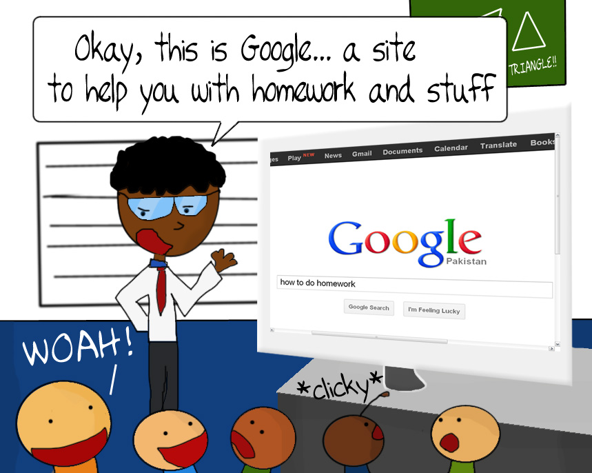

There are many reasons why a student may plagiarize
There is conflict and divergence among experts about how to cite sources. A student may be using one while the examiner may only be accepting another. Furthermore, online sources are very hard to cite. The student may give the correct URL of a website, but as URLs can change overnight, by the time the research is checked, the URL could have changed. The examiner will then accuse the student of citing incorrect sources.
A majority of student are not aware of how to explore catalogues for the extraction of academic journal items, or use other reference sources. Staff of the institution can thus facilitate the students, and help them acquire these skills by working in union with the school library. A great number of students don’t know how to manage Internet sources and other sources, which may have an adverse impact on the assignment.
Researches by The Department of Education of England show that a majority of undergraduates (62%) are unable to differentiate between rephrased and copied content. The problem gets multiplied tenfold when students can’t understand what they are paraphrasing. When this happens, they leave the text as it is, and are caught for plagiarism. This is called “Unintentional Plagiarism” by experts.
Students may inaccurately suppose plagiarism can only mean copying another’s written text. Thinking so, they may steal another’s intellectual/mental property, which is also a form of plagiarism. Many students are unable differentiate public information, from the materials and ideas which are licensed, patented, or copyrighted, and from materials and ideas that have a mental belonging to their creators and so, whose sources need to be cited.
Many students can come from societies where the friends and family members’ expectations can pressurize students to such an extent, that they think that they have to maintain good grades, no matter what. Frequently, all that holds importance to students are high grade point averages and scholarships, which they are ready to attain by hook, or by crook. In addition to this, students may plagiarize to “even out competition” with those students who cheat in exams. Also, undergraduate students seldom have the appropriate organizational and time management skills needed at their level of education, or to be a able to complete a large assignment. They get scared by the size of the research paper, and resort to plagiarism.